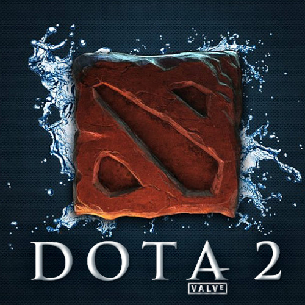
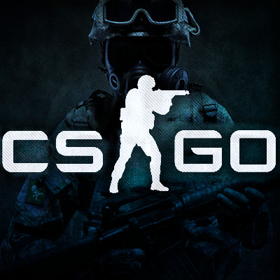

Esports
All about our teams, placements, players, and upcoming matches
DOTA 2
DOTA 2, originally known as Defense of the Ancients, is a free-to-play MOBA game centered around two teams attempting to destroy the other's Ancient. Originally created as a mod for Blizzard Entertainment's Warcraft III, the game has since taken off with its own multi-million esports scene. The UCSC Dota 2 competitive team may only be one year old, but in that year they have made it to the CSL playoffs. Now, as they move forward, the team is determined to keep their momentum running!
Players
- Jason "Iroha-" M.
- Benjamin "Benbird" B.
- Maxim "atp" K.
- Zhao "Gakkilove" M.
- Kyohei "Poxy" I. (Team Captain)
You can contact Jason Y., the team's competitive manager, at jyang128@ucsc.edu.
Rocket League

Rocket League combines soccer with driving in a physics-based multiplayer game which satisfies cravings for fast-paced gameplay and montage-worthy moments for players willing to face Mount Champion. The 2018/19 school year marks the beginning of Slug Gaming’s official support of Rocket League. We plan on getting the game the recognition it deserves and drafting a competitive team capable of taking on the powerhouses of collegiate Rocket League.
Players
- To be determined
You can contact Michele, the team's competitive manager, at mimoscat@ucsc.edu.
Overwatch

Overwatch is a competitive team-based first person shooter game. Published by Blizard Entertainment Overwatch in 2016, the made top 20 Nationally & placed second in Fanime OW tournament. This year the division 1 team strives to make a mark in the school's esports competitive scene by competing in the Tespa College Championship Series. We are aiming to be top 8 on the charts. The Overwatch division embraces an all-inclusive environment where gamers can discover, discuss, learn, share tips, and play Overwatch with fellow colleagues! In addition, we offer opportunities for people to experience the social and competitive aspects of Overwatch. Whether you play casually or competitively, this organization welcomes all students to join!
A Team Players:
- Jesse "ImThePepper" Galvan (Captain)
- Kuba "Fusion" Anglin
- Andrew "Temmie" Hartwell
- Michele "knarf" Moscatelli
- Chris "Codytappen" Sisemore
B Team Players:
- Zack "emf" Renick (Captain)
- Nicholas "Enicholas" Lien
- John "Dingusbutt" Khaw
- Nathan "ChasePack" Chase
- William "CMB" Kuhns
- Kurt "limpgrimp" Duncan
You can contact Erika "Kolex", the team's competitive manager, at kolex0071@gmail.com.
League of Legends

League of Legends is a free-to-play MOBA game that pits two teams of powerful champions to battle head-to-head across multiple battlefields. Since its release in 2009, it has grown to be the most played PC game with the largest competitive scene worldwide. UCSC’s League of Legends competitive team has an extensive history in the collegiate tournament scene. Notable achievements includes: a top 16 finish in a western conference playoff run, 3rd place in ACeL(WEC), and Fanime Tournament Champions. The team is looking forward to more championship runs in the future!
Main Team Players:
- Top: TBA
- Jungle: Nicholas "Tokiidoki" Y.
- Mid: TBA
- Marksman: Anton "Fajisel" Z.
- Support: Gabriel "Encourage" S.
- Coaches: Sam "A Bearded Panda" C., Gabriel "L am Eternal" H., Devin "okiu" W.
You can contact Waldon "Wallybot", the team's competitive manager, at leagueofslugs@gmail.com.
Counter-Strike: Global Offensive
Counter-Strike: Global Offensive, commonly known as CS:GO, is a team-based first person shooter. In a game of CS:GO, two teams compete against each other to win the most number of obejectives over a 30 round set. The UCSC CS:GO team was among the Top 16 for CSL 2017-2018, and AVGL Top 4 2018. This year, the team hopes to make it to the finals in CSL.
Team Players:
- Drvgon
- Moopey
- Fury
- MazaParaza
- Shike
You can contact Derreck "MazaParaza" Frey, the team's competitive manager, at djfrey@ucsc.edu.
Hearthstone

Hearthstone is an online card game game about optimizing small decisions, probability, and statistics all to reduce your opponent's health to 0. This year, the team hopes to grow the UCSC Hearthstone community to show that even schools without a varsity esports program still pose a threat in the competitive scene.
Division 1 Players:
- Steven "TheTrueAsian"
- Jacob "Paperninja"
- Joshua "MalMMJ05"
Division 2 Players:
- Tim "Arrowbounce"
- Kyle "Lunasol"
- Joshua "Actual"
Division 2 Playres:
- Edwin "Edywang"
- Vincent "Vince8nt"
- Ryuya "Ryuyah"
You can contact Elijah "Kleptode", the team's competitive manager, at eholmber@ucsc.edu.
StarCraft 2

StarCraft 2 is a sci-fi real time strategy game made by Blizzard Entertainment. So far it has faced two different expansion, with the game on its third and final version. The StarCraft series has also served as the foundation for the Collegiate Star League, with the early CSL being focused around competitive games of StarCraft: Brood War. This year, Slug Gaming's StarCraft 2 team enters into its 9th year of competition. Active players are swinging back in to game for 2018 which will hopefully make for an exciting competitive season.
Team Players:
- To be announced
You can contact Geoff "Monophonic" Smith, StarCraft 2's competitive manager, at gegsmith@ucsc.edu.
Fortnite

Fortnite is at the heat of the scene of the recently emerging Battle Royale genre where players parachute down from a flying bus, summon and dismantle buildings, and shoot to be the last man or team standing. It's also the newest addition to our esports lineup, where we offer both casual and competitive communities. We are coming into CSL’s first year of Fortnite with a load of energetic players and high hopes!
Team Players:
- To be announced
You can contact Geoff "Monophonic" Smith, who is also Fortnite's competitive manager, at gegsmith@ucsc.edu.